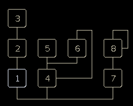
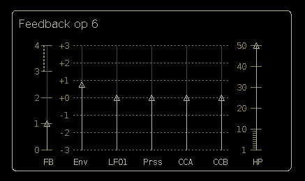
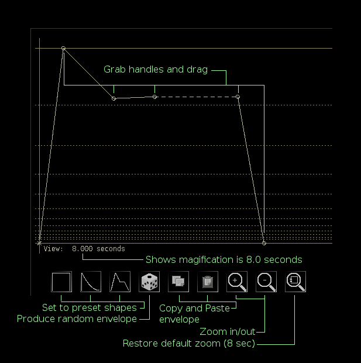
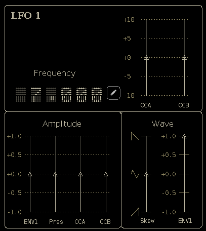
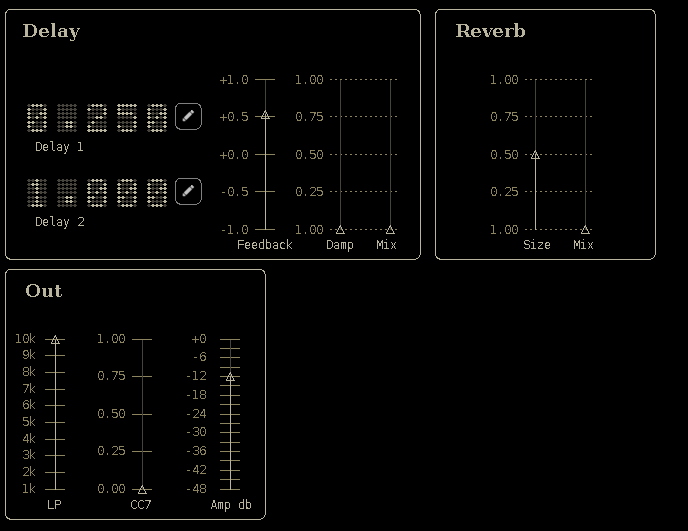

|
|
| Algorithm |
The FM 'Algorithm' may be divided into three sections corresponding to the three carrier operators 1, 4 and 7. Operators 1, 2 and 3 form a serial stack. Operators 4, 5 and 6 form a single carrier with dual modulators. This stack provides feedback between operators 4 and 6. The nature of this feedback is complex and often hard to predict. Operators 7 and 8 form a simple carrier/modulator pair with more traditional feedback for operator 8. With minor variations, due to feedback, the parameters for each operator are identical. |
 |
| Operators |
Top |
| Vel - Velocity |
|
| Prss - Pressure or Channel After
Touch |
|
| LFO1 - |
|
| LFO2 - |
|
| CCA - MIDI controller A |
|
| CCB - MIDI controller B |
| Feedback |
Top |
OP6 feedback is more complex then OP8 feedback. A highpass filter is used to block the DC component present in the feedback signal. The exact value is not crucial but generally should be below the lowest expected frequency. For highpass values below about 10 HZ there is a discernible blip while the filter stabilizes. |
 |
| Envelopes |
Top |
Each Operator has a dedicated ADDSR envelope. There is also an extra "pitch" envelope with the same format. The zoom buttons zoom in to and out of the origin and may be set to any level of magnification. As the mouse moves over the envelope graph the status line is updated to show it's position. The small "View" value just below the graph indicates the level of magnification . The vertical line indicates the origin at time 0.0 There are no limits, in either direction, for the zoom level. This means there are no upper bounds to envelope lengths. The horizontal guide lines stop at around 130 seconds but the envelope may extend past this point. I have settled on a standardized envelope for all Cadejo instruments. ALGO was implemented prior to this adoption. The standard envelope is slightly more versatile then the one used in ALGO. |
 |
| LFO |
Top |
ALGO has three LFOs: LFO1, LFO2 and Vibrato. LFO 1 and 2 are nearly identical, the only difference being the modulation sources available. The vibrato LFO is located on the Pitch page. The frequency, amplitude and wave of LFOs 1 and 2 may be modulated by various sources.
* For LFO2 Amplitude and wave modulation is from LFO1 instead of ENV1 |
 |
| Pitch |
Top |
| Vibrato | Sens |
Sensitivity |
Pitch |
Port |
Portamento |
| Depth |
Minimum vibrato depth |
Env |
Pitch envelope depth |
||
| Delay |
Vibrato onset delay |
LFO1 |
LFO1 pitch modulation depth |
||
| LFO2 |
LF02 pitch modulation depth |
| Effects |
Top |
The ALGO effects block includes 2 delay lines with individual delay times up to 1.0 second each, The delay feedback, damping and mix parameters apply to both delay lines. |
 |